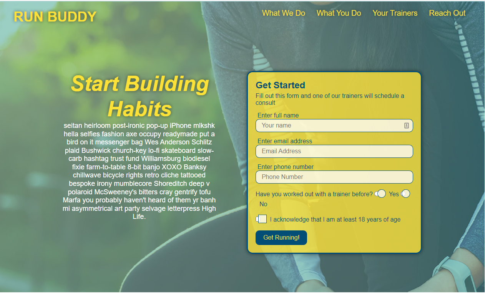

About Me
The dominance of mobile internet use means that users are searching for the right business as they
travel, shop, or sit on their couch at home. Search Engine Optimization (SEO) allows you to increase
your visibility and find the right customers for your business.

Work
The web is full of opinions, and some of these can be negative. Social media allows anyone with an
internet connection to say whatever they want about your business. Online Reputation Management gives
you the control over what potential customers see when they search for your business.

Contact Me
Social media continues to have a sizable influence on buying habits. Social media marketing helps you
determine which platforms are suited to your brand, using analytics to find the right markets and
increase your lead generation.
Resume
The dominance of mobile internet use means that users are searching for the right business as they
travel, shop, or sit on their couch at home. Search Engine Optimization (SEO) allows you to increase
your visibility and find the right customers for your business.
Lead Generation

Inbound strategies for lead generation require less work for your business, bringing customers directly
to your website.
Brand Awareness

Users find your business through paid and organic searches, increasing the search ranking and visibility
for your business.
Cost Management

As the search ranking for your business increases, your advertising costs decrease, and you no longer
need to advertise your page.